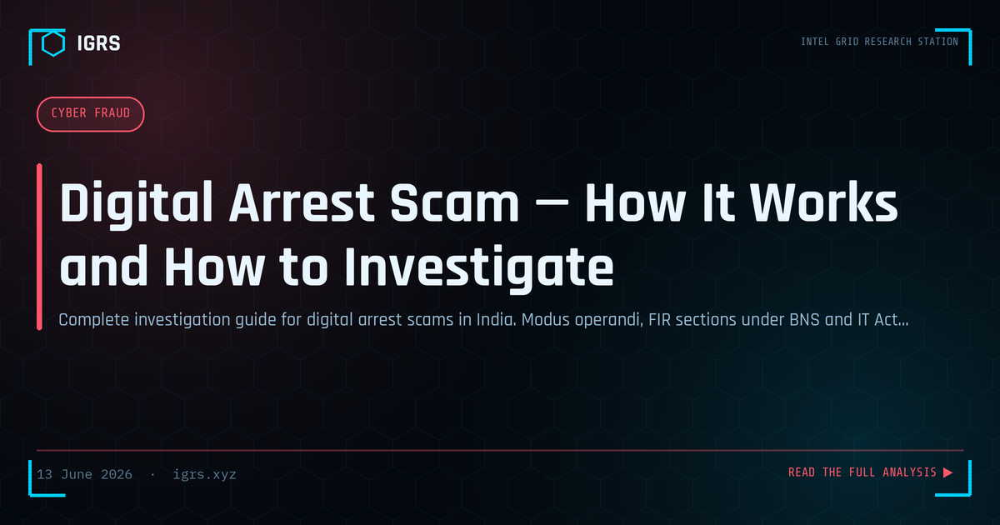

Digital Arrest Scam — How It Works and How to Investigate
The Digital Arrest Scam: Fear as a Weapon
The digital arrest scam has emerged as one of the most psychologically devastating frauds in India, draining lakhs from victims through fear and false authority. Fraudsters impersonate police, CBI, ED, or customs officials, claim the victim is implicated in serious crime, and hold them in "digital custody" over video call for hours or days until they pay. Crucially, there is no such thing as "digital arrest" in Indian law. This guide explains how the scam operates and how it is investigated.
How the Digital Arrest Scam Works
The scam follows a carefully engineered psychological sequence:
- The hook: A call claiming a parcel in the victim's name contains drugs/contraband, or their Aadhaar is linked to a crime
- The escalation: The call transfers to fake "police" or "CBI" officers in uniform over video
- The isolation: The victim is told to stay on call, not contact anyone, under "digital arrest"
- The pressure: Fake arrest warrants, case documents, and threats sustain the fear
- The extraction: The victim is coerced into transferring money to "verify" funds or pay "bail"
Why It Is Entirely Fake
Understanding the scam's impossibility is the strongest defence. No Indian law enforcement agency conducts arrests over video call. No agency demands money to "clear" a case or holds anyone in "digital custody." CBI, ED, police, customs, and TRAI never operate this way. The entire premise is fabricated to manufacture fear and compliance.
Investigation Methodology
Investigating digital arrest scams combines several techniques:
- Money trail: Trace transactions via UTR to beneficiary accounts and mule networks
- Phone intelligence: CDR and TAFCOP on the calling numbers
- VoIP analysis: Many calls use VoIP/international routing requiring specialised tracing
- Account freezing: Rapid 1930 reporting to freeze beneficiary accounts
- Platform data: Legal process for the video call platform records
The 24-Hour Action Window
As with all financial fraud, speed determines recovery. The first hours after the victim transfers money are critical for freezing funds before they are laundered through mule accounts. Rapid reporting to 1930 and cybercrime.gov.in initiates the freeze mechanism. Investigators should prioritise the money trail immediately while preserving the communication evidence.
Applicable Legal Sections
| Section | Act | Offence |
|---|---|---|
| Section 318(4) | BNS 2023 | Cheating |
| Section 308 | BNS 2023 | Extortion |
| Section 319 | BNS 2023 | Cheating by personation |
| Section 170 | BNS 2023 | Impersonating a public servant |
| Section 66C/66D | IT Act 2000 | Identity theft, personation |
The VoIP and International Dimension
Digital arrest scams frequently use VoIP services and international call routing to mask origin, and the operations are often run from abroad. This complicates tracing, as VoIP numbers may lack the CDR and Aadhaar linkage of regular SIMs. Investigation may require platform legal process, international cooperation, and focus on the money trail — which, unlike the call origin, leads to Indian mule accounts that can be frozen and investigated.
Evidence Preservation
Victims and investigators should preserve all evidence: screen recordings of the video calls if available, the calling numbers and timestamps, all transaction details and UTR numbers, the fake documents (warrants, IDs) sent by fraudsters, and any chat communications. Screen recordings of fake "officers" are particularly valuable. All electronic evidence requires Section 63 BSA certification.
The Psychological Dimension
Digital arrest scams succeed through sophisticated psychological manipulation — sustained fear, false authority, isolation, and time pressure that overwhelm rational judgement. Victims are often educated, capable people caught in a manufactured crisis. Understanding this helps investigators approach victims with empathy rather than judgement, and helps the public recognise that anyone can be vulnerable to such calculated manipulation.
Prevention and Public Awareness
The single most powerful defence is knowledge: no Indian agency conducts "digital arrests" or demands money over video call. If such a call comes, the correct response is to disconnect immediately and report to 1930. Other key advisories: agencies never demand secrecy or isolation, never ask you to transfer money to "verify" it, and never conduct official business over WhatsApp or Skype video calls. Spreading this awareness is the most effective way to defeat a scam that depends entirely on the victim not knowing it is impossible.